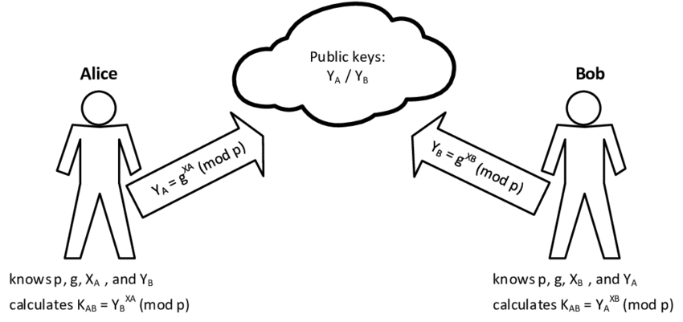

Diffie-Hellman Key Exchange: The Genesis of Public-Key Cryptography
Diffie-Hellman Key Exchange
What is Diffie-Hellman Key Exchange?
The Diffie-Hellman (DH) Key Exchange is a method for two parties to establish a shared secret key over an insecure communication channel. Proposed by Whitfield Diffie and Martin Hellman in 1976, it was the first practical method for public key exchange. It doesn't encrypt or decrypt messages itself, but rather provides a secure way to agree on a symmetric key that can then be used for subsequent secure communication.
The Diffie-Hellman (DH) Key Exchange is a method for two parties to establish a shared secret key over an insecure communication channel. Proposed by Whitfield Diffie and Martin Hellman in 1976, it was the first practical method for public key exchange. It doesn't encrypt or decrypt messages itself, but rather provides a secure way to agree on a symmetric key that can then be used for subsequent secure communication.
The Problem Diffie-Hellman Solves: Secure Key Distribution
The Symmetric Key Distribution Problem
Before Diffie-Hellman, for two parties to communicate securely using symmetric encryption (where the same key is used for both encryption and decryption), they first needed to share a secret key. The challenge was how to share this key over an insecure channel without an eavesdropper intercepting it. This "key distribution problem" was a major hurdle for secure communication. Diffie-Hellman provided a revolutionary solution by allowing parties to derive a shared secret without ever actually transmitting it.
Before Diffie-Hellman, for two parties to communicate securely using symmetric encryption (where the same key is used for both encryption and decryption), they first needed to share a secret key. The challenge was how to share this key over an insecure channel without an eavesdropper intercepting it. This "key distribution problem" was a major hurdle for secure communication. Diffie-Hellman provided a revolutionary solution by allowing parties to derive a shared secret without ever actually transmitting it.
| Method | Key Type | Key Distribution Challenge | Main Purpose |
|---|---|---|---|
| Symmetric Encryption (e.g., AES) | Single shared key | Key must be shared secretly prior to communication. | Encrypt/Decrypt data. |
| Diffie-Hellman Key Exchange | Public parameters, private secrets, shared derived secret | Derives a shared secret over an insecure channel, no direct key transmission. | Establish a shared secret key. |
| Asymmetric Encryption (e.g., RSA) | Public/Private key pair | Public key can be shared openly; private key kept secret. | Encrypt/Decrypt data (but slower than symmetric). |
Mathematical Foundation: The Discrete Logarithm Problem
Modular Exponentiation
The core operation involves modular exponentiation: calculating $a^b \pmod{n}$. This operation is computationally efficient even for very large numbers.
Example: $3^4 \pmod{7}$ $3^4 = 81$ $81 \pmod{7} = 4$ So, $3^4 \equiv 4 \pmod{7}$
The core operation involves modular exponentiation: calculating $a^b \pmod{n}$. This operation is computationally efficient even for very large numbers.
Example: $3^4 \pmod{7}$ $3^4 = 81$ $81 \pmod{7} = 4$ So, $3^4 \equiv 4 \pmod{7}$
The Discrete Logarithm Problem (DLP)
Given a prime number $p$, a generator $g$ (a primitive root modulo $p$), and a value $Y$, it is computationally difficult to find the exponent $x$ such that: $$g^x \equiv Y \pmod{p}$$ This is called the discrete logarithm problem. While calculating $g^x \pmod{p}$ is easy, finding $x$ when $g$, $Y$, and $p$ are known is extremely hard for large prime numbers. This asymmetry is what makes Diffie-Hellman secure.
Example: Given $2^x \equiv 5 \pmod{11}$. Finding $x$ is hard. (Here, $x=4$ because $2^4 = 16 \equiv 5 \pmod{11}$).
Given a prime number $p$, a generator $g$ (a primitive root modulo $p$), and a value $Y$, it is computationally difficult to find the exponent $x$ such that: $$g^x \equiv Y \pmod{p}$$ This is called the discrete logarithm problem. While calculating $g^x \pmod{p}$ is easy, finding $x$ when $g$, $Y$, and $p$ are known is extremely hard for large prime numbers. This asymmetry is what makes Diffie-Hellman secure.
Example: Given $2^x \equiv 5 \pmod{11}$. Finding $x$ is hard. (Here, $x=4$ because $2^4 = 16 \equiv 5 \pmod{11}$).
Prime Numbers (p) and Generators (g)
A prime number $p$ is a natural number greater than 1 that has no positive divisors other than 1 and itself.
A generator (or primitive root) $g$ modulo $p$ is an integer such that every number from 1 to $p-1$ can be expressed as a power of $g$ modulo $p$. For Diffie-Hellman, $g$ must be a generator modulo $p$.
Example: For $p=7$, $g=3$ is a generator because: $3^1 \equiv 3 \pmod 7$ $3^2 \equiv 2 \pmod 7$ $3^3 \equiv 6 \pmod 7$ $3^4 \equiv 4 \pmod 7$ $3^5 \equiv 5 \pmod 7$ $3^6 \equiv 1 \pmod 7$ It generates all numbers from 1 to 6.
A prime number $p$ is a natural number greater than 1 that has no positive divisors other than 1 and itself.
A generator (or primitive root) $g$ modulo $p$ is an integer such that every number from 1 to $p-1$ can be expressed as a power of $g$ modulo $p$. For Diffie-Hellman, $g$ must be a generator modulo $p$.
Example: For $p=7$, $g=3$ is a generator because: $3^1 \equiv 3 \pmod 7$ $3^2 \equiv 2 \pmod 7$ $3^3 \equiv 6 \pmod 7$ $3^4 \equiv 4 \pmod 7$ $3^5 \equiv 5 \pmod 7$ $3^6 \equiv 1 \pmod 7$ It generates all numbers from 1 to 6.
Diffie-Hellman Algorithm: Step-by-Step
The Protocol Steps:
The Magic: Both $S_A$ and $S_B$ will be equal to the same shared secret $S$, because: $$S_A = B^a \pmod{p} = (g^b)^a \pmod{p} = g^{ba} \pmod{p}$$ $$S_B = A^b \pmod{p} = (g^a)^b \pmod{p} = g^{ab} \pmod{p}$$ Since $g^{ba} = g^{ab}$, Alice and Bob arrive at the same shared secret key without ever exchanging their private exponents ($a$ and $b$).
- Agreement on Public Parameters: Alice and Bob publicly agree on a large prime number $p$ and a generator $g$ (where $g < p$). These values are not secret.
- Alice's Secret: Alice chooses a private random integer $a$ ($1 < a < p-1$). She computes her public value $A$: $$A = g^a \pmod{p}$$ Alice sends $A$ to Bob over the insecure channel.
- Bob's Secret: Bob chooses a private random integer $b$ ($1 < b < p-1$). He computes his public value $B$: $$B = g^b \pmod{p}$$ Bob sends $B$ to Alice over the insecure channel.
- Shared Secret Computation (Alice): Alice receives $B$ from Bob. She computes the shared secret key $S_A$: $$S_A = B^a \pmod{p}$$
- Shared Secret Computation (Bob): Bob receives $A$ from Alice. He computes the shared secret key $S_B$: $$S_B = A^b \pmod{p}$$
The Magic: Both $S_A$ and $S_B$ will be equal to the same shared secret $S$, because: $$S_A = B^a \pmod{p} = (g^b)^a \pmod{p} = g^{ba} \pmod{p}$$ $$S_B = A^b \pmod{p} = (g^a)^b \pmod{p} = g^{ab} \pmod{p}$$ Since $g^{ba} = g^{ab}$, Alice and Bob arrive at the same shared secret key without ever exchanging their private exponents ($a$ and $b$).
Worked Example: Diffie-Hellman Key Exchange
Let's see Diffie-Hellman in action with small numbers:
Security of Diffie-Hellman: The DLP Challenge
The Discrete Logarithm Problem (DLP)
The security of the Diffie-Hellman key exchange fundamentally rests on the computational difficulty of solving the Discrete Logarithm Problem (DLP). An eavesdropper (Eve) observes $p$, $g$, $A = g^a \pmod{p}$, and $B = g^b \pmod{p}$. To find the shared secret $g^{ab} \pmod{p}$, Eve would need to find either $a$ from $A$ or $b$ from $B$. For sufficiently large prime numbers $p$, finding these exponents ($a$ or $b$) is currently intractable with classical computers.
Man-in-the-Middle (MitM) Attack:
While Diffie-Hellman prevents an eavesdropper from learning the shared secret, it does not inherently protect against a "Man-in-the-Middle" (MitM) attack. In a MitM attack, a malicious third party (Mallory) intercepts the public values exchanged ($A$ and $B$) and establishes separate shared secrets with Alice and Bob. Mallory then decrypts messages from one party, reads/modifies them, and re-encrypts them with the other shared secret before forwarding. To mitigate this, Diffie-Hellman is often combined with other mechanisms, such as **digital signatures**, to authenticate the identities of the communicating parties.
The security of the Diffie-Hellman key exchange fundamentally rests on the computational difficulty of solving the Discrete Logarithm Problem (DLP). An eavesdropper (Eve) observes $p$, $g$, $A = g^a \pmod{p}$, and $B = g^b \pmod{p}$. To find the shared secret $g^{ab} \pmod{p}$, Eve would need to find either $a$ from $A$ or $b$ from $B$. For sufficiently large prime numbers $p$, finding these exponents ($a$ or $b$) is currently intractable with classical computers.
Man-in-the-Middle (MitM) Attack:
While Diffie-Hellman prevents an eavesdropper from learning the shared secret, it does not inherently protect against a "Man-in-the-Middle" (MitM) attack. In a MitM attack, a malicious third party (Mallory) intercepts the public values exchanged ($A$ and $B$) and establishes separate shared secrets with Alice and Bob. Mallory then decrypts messages from one party, reads/modifies them, and re-encrypts them with the other shared secret before forwarding. To mitigate this, Diffie-Hellman is often combined with other mechanisms, such as **digital signatures**, to authenticate the identities of the communicating parties.
| Key Size (bits) | Security Equivalence | Resistance to DLP | MitM Protection |
|---|---|---|---|
| 1024 | 80-bit symmetric | Considered weak/deprecated for modern use | None (DH alone) |
| 2048 | 112-bit symmetric | Current industry standard, good security | None (DH alone) |
| 3072 | 128-bit symmetric | Recommended for long-term security | None (DH alone) |
| 4096+ | Higher symmetric equiv. | Very high security, future-proofed | None (DH alone) |
Real-World Applications of Diffie-Hellman
Diffie-Hellman's widespread use underpins much of modern secure communication:
- Transport Layer Security (TLS/SSL): Used to secure web traffic (HTTPS) and establish secure connections. It's often used for "Ephemeral Diffie-Hellman" (DHE) to provide perfect forward secrecy.
- Secure Shell (SSH): Provides secure remote access to computers. DH is used to establish the initial secure channel for key exchange.
- Virtual Private Networks (VPNs): Securely extend a private network across a public network. DH is used to set up the secure tunnel.
- IPsec: A suite of protocols used to secure Internet Protocol (IP) communications. DH is a common component for key exchange.
- Secure Email: Protocols like OpenPGP often leverage DH for key agreement.
Conclusion: A Cornerstone of Modern Cryptography
The Diffie-Hellman Key Exchange is a monumental achievement in the field of cryptography. By solving the seemingly intractable problem of securely distributing keys over insecure channels, it laid the groundwork for public-key cryptography and revolutionized how we protect digital communications. Its elegant reliance on the mathematical difficulty of the discrete logarithm problem continues to safeguard our online interactions, forming an indispensable part of the security infrastructure of the internet.
References
- Diffie, W., & Hellman, M. E. (1976). New directions in cryptography. IEEE Transactions on Information Theory, 22(6), 644-654.
- Stallings, W. (2020). Cryptography and Network Security: Principles and Practice. Pearson.